In this tutorial we demonstrate how to solve time-dependent solid mechanics problems. We consider the small-amplitude oscillations of a circular disk and compare the computed solution against analytical predictions based on linear elasticity.
Theory
Small-amplitude, axisymmetric oscillations of a circular disk of radius 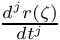 are governed by the Navier-Lame equations
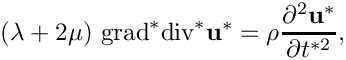
where the displacement field is given by 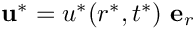. Here 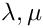 are the disk's two Lame constants and 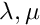 is its density. The outer boundary is stress-free so that
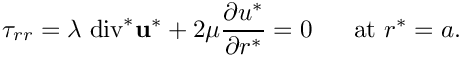
We non-dimensionalise all lengths and displacements on the disk's undeformed radius, 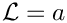, and scale time on
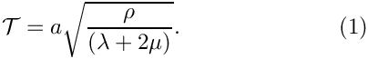
This transforms the governing PDE into the dimensionless and parameter-free form
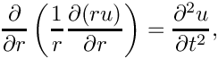
subject to the boundary condition
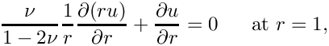
where 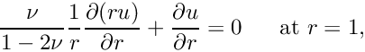 is Poisson's ratio.
Making the ansatz 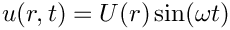 transforms the PDE into an ODE for 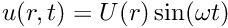:
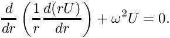
The solution of this ODE are Bessel functions and the requirement that is finite at 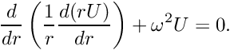 implies that
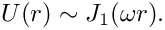
where 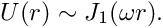 is the Bessel function of first order.
Substituting this into the stress-free boundary condition yields the dispersion relation
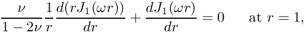
for the eigenfrequencies 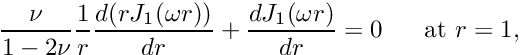.
If the disk performs oscillations in a single mode with eigenfrequency its displacement field is therefore given by
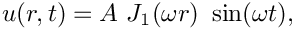
where 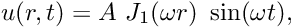 is the (small) amplitude of the oscillations.
Implementation
We discretise the disk with oomph-lib's large-displacement solid mechanics elements and apply initial conditions that are consistent with an oscillation in its first eigenmode. As discussed in the Solid Mechanics Theory Tutorial, time-dependent problems require the specification of the (square of the) parameter
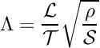
which represents the ratio of the system's intrinsic timescale 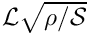, to the timescale  used to non-dimensionalise time; here 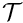 is the reference stiffness used to non-dimensionalise the stresses.
used to non-dimensionalise time; here 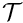 is the reference stiffness used to non-dimensionalise the stresses.
Since the disk performs small-amplitude oscillations it is appropriate to assume linear elastic behaviour with Young's modulus  and Poisson's ratio . We therefore use Young's modulus to non-dimensionalise the stresses by setting 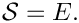 Using (1), the parameter 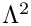 is then given by
and Poisson's ratio . We therefore use Young's modulus to non-dimensionalise the stresses by setting 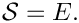 Using (1), the parameter 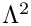 is then given by
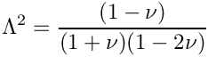
where we used the identity 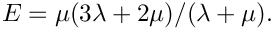
Results
Here is an animation of the computed time-dependent displacement field. (Computations were only performed in a quarter of the domain, using appropriate symmetry boundary conditions along the lines 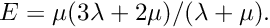 and 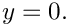

The figure below shows (in red) the radius of a control point on the disk's curvilinear boundary. The green line shows the corresponding theoretical prediction for disk's radius for the first eigenfrequency 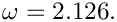 Theoretical and computational results are in excellent agreement.

The final plot shows an animation of the theoretical and computed radial displacement fields along the line 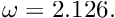, parametrised by a Lagrangian coordinate  . The results are again in excellent agreement throughout the domain.
. The results are again in excellent agreement throughout the domain.

Global parameters
As usual we define the global problem parameters in a namespace. We define Poisson's ratio, compute the associated timescale ratio , and provide a pointer to the constitutive law.
The multiplier(...) function is needed during the assignment of the initial conditions. It is used to specify the product of the timescale ratio and the isotropic growth 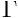. Since the present problem does not involve any growth we have 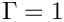, so the function simply returns the (spatially constant) timescale ratio. See the Solid Mechanics Theory Tutorial and section Assignment of history values for the Newmark timestepper for further details.
The driver code
We use command line arguments to indicate if the time-dependent simulation is run in validation mode, in which case we only perform a few timesteps:
We create a Hookean constitutive equation, build the problem and run the simulation:
Specifying the initial condition via a time-dependent GeomObject
The equations of solid mechanics require the assignment of initial conditions for the position and the velocity of all material particles at some initial time. Within oomph-lib, such initial conditions are most naturally specified in the form of time-dependent GeomObjects. Here is the specification of an axisymmetric, oscillating disk of unit radius whose displacement field is given by the analytical solution derived in the Theory section. The analytical solution requires the specification of the amplitude of the oscillation and the Poisson's ratio – these suffice to compute the time-dependent position, velocity and acceleration as a function of the current time, specified by the TimeStepper object.
The class provides a static member function residual_for_dispersion(...) which is used to solve the nonlinear dispersion relation for the disk's eigenfrequency . The function is static (and thus essentially a global function) because it interacts with oomph-lib's black-box Newton solver.
The private member data stores the amplitude and period of the oscillation, the material's Poisson ratio and the eigenfrequency.
Constructor
The constructor uses oomph-lib's black-box Newton solver, defined in the namespace BlackBoxFDNewtonSolver, to determine the eigenfrequency.
The dispersion relation
Here is the specification of the dispersion relation, in the form required by oomph-lib's black-box Newton solver. The Bessel functions are computed by C.R. Bond's bessjy01a(...) function, available (with permission) via oomph-lib's CRBond_Bessel namespace.
The position(...), veloc(...) and accel(...) functions
The position(...), veloc(...) and accel(...) functions specify the motion of the GeomObject, according to the solution of the linearised equations derived in the Theory section. Here is a listing of the position(...) function:
The veloc(...) and accel(...) functions are very similar and we omit their listings in the interest of brevity. See the source code disk_oscillation.cc for details.
The mesh
We discretise a quarter of the domain with a solid mechanics version of the refineable quarter circle sector mesh, constructed using multiple inheritance.
The constructor calls the constructor of the underlying non-solid mesh, checks that the element type, specified by the template argument, is a SolidFiniteElement, and sets the Lagrangian coordinates of all nodes to their Eulerian positions, making the current configuration stress-free.
The Problem class
The Problem class has the usual member functions which will be discussed in more detail below.
The Problem constructor
We start by creating the timestepper – the standard Newmark timestepper with two history values (We refer to another tutorial for a discussion of the template parameter in the Newmark timestepper). Next, we create a GeomObject that specifies the curvilinear boundary of the quarter circle domain and pass it to the mesh constructor.
We select the nodes on the horizontal symmetry boundary and on the curvilinear boundary as control nodes whose displacement we shall document in a trace file.
We apply symmetry boundary conditions along the horizontal and vertical symmetry boundaries: zero vertical displacement along the line (boundary 0) and zero horizontal displacement along the line (boundary 2).
We complete the build of the elements by specifying the pointer to the constitutive law and to the timescale ratio 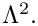
Finally, we apply one level of uniform refinement and assign the equation numbers.
Post-processing
We start the post-processing routine by plotting the shape of the deformed body, before documenting the radii of the control points and the exact outer radius of the disk (according to linear theory) in the trace file.
Next we and output the exact and computed displacements and velocities (as a function of the Lagrangian coordinate) along the horizontal symmetry line where The displacements are given by the difference between the current Eulerian and the Lagrangian positions:
The function also contains similar output for 2D displacements fields but we suppress the listing here and refer to the source code disk_oscillation.cc for details.
Running the time-integration
Before starting the time-integration we create an output directory and open a trace file that we shall use to record the displacements of the control points selected earlier.
Next, we initialise the global Time object so that the initial condition is assigned at 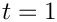, and set the timestep for the time integration.
We choose the amplitude of the oscillation and pass it and the value of Poisson's ratio to the constructor of the GeomObject that specifies the initial condition.
To assign the initial conditions, we create a SolidInitialCondition object from the GeomObject and call the helper function set_newmark_initial_condition_consistently(...) which assigns the (Newmark) history values of the nodal positions to be consistent with the current motion of the AxisymOscillationDisk.
Finally, we document the initial condition and start the timestepping loop.
Comments and Exercises
Higher modes
In the constructor of the AxisymOscillationDisk we used an initial guess of 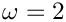 for the eigenfrequency. With this initial guess the Newton iteration converges to the first eigenfrequency with a period of 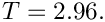 The first eigenmode is relatively smooth and therefore easily resolved on a coarse mesh. Explore the system's higher eigenmodes by specifying larger initial guesses for . For instance, specifying an initial guess of  the Newton iteration converges to an eigenmode with a period of 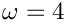 You will need much finer meshes and smaller timesteps to accurately resolve these oscillations. This is because the Newmark scheme does not have any dissipation. This implies that any spurious features that are generated by under-resolved computations persist indefinitely.
the Newton iteration converges to an eigenmode with a period of 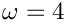 You will need much finer meshes and smaller timesteps to accurately resolve these oscillations. This is because the Newmark scheme does not have any dissipation. This implies that any spurious features that are generated by under-resolved computations persist indefinitely.
Assignment of history values for the Newmark timestepper
We commented elsewhere that, even though the mathematical initial value problem only requires the specification of the initial position and the velocity, the Newmark timestepper requires assignments for the initial positions and for two history values, representing the discrete velocities and accelerations. We refer to the relevant section in the Solid Mechanics Tutorial for a discussion of the automatic assignment of these history values for solid mechanics problems.
We note that the function SolidMesh::Solid_IC_problem.set_newmark_initial_condition_consistently(...) which may be used to assign the history values, requires the specification of the product of the (possibly spatially-varying) "multiplier" 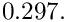 – the product of the growth factor and the timescale ratio – via a function pointer. If this function pointer is not specified, it is assumed that the product of these two quantities is equal to one – appropriate for a case without growth and when time is non-dimensionalised on the system's intrinsic timescale.
If the "multiplier" is not (or wrongly) specified, the assignment of the history values will be incorrect and oomph-lib will issue a suitable warning if the library is compiled with the PARANOID flag. You should experiment with this by removing the function pointer in the call to SolidMesh::Solid_IC_problem.set_newmark_initial_condition_consistently(...).
Source files for this tutorial
- The source files for this tutorial are located in the directory:
demo_drivers/solid/disk_oscillation/
- The driver code is:
demo_drivers/solid/disk_oscillation/disk_oscillation.cc
PDF file
A pdf version of this document is available.